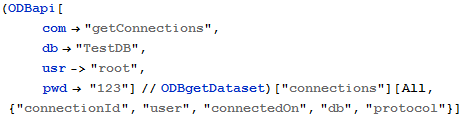
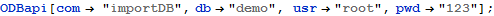
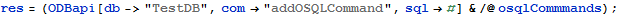
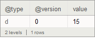
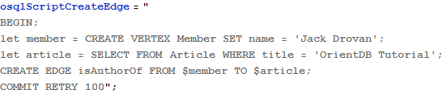

Basic Test of API Commands
Table of Content
Load Packages 1
Logout 2
Login 2
Get Connections 2
Get Server 3
Database Operations 5
Create Database 5
Get Databases 6
Get Single Database 6
Delete Database 7
Import/Export Database 7
Classes Operations 7
Delete a Class 7
Add a Class 8
Get a Class 8
OrientDB OSQL Operations 8
OrientDB - POST OSQL Command 8
Make a list of OrientDB SQL Commands (OSQL) 9
Execute OSQL commands one by one 9
Set permanently the database and command parameters 10
Get Person records 10
OrientDB - POST OSQL Script 10
Delete Database 10
Create Database 11
Create Classes and Properties with an OrientDB SQL script 11
Populate with a few MEMBERs and an ARTICLE 12
Create Edge - MEMBER isAuthorOf ARTICLE 12
OrientDB - GET OSQL Script 13
Read-Only OrientDB SQL Command 13


Default User and Password are “admin”, “admin”





Make a list of OrientDB SQL Commands (OSQL)
Execute OSQL commands one by one

Set permanently the database and command parameters
Create Classes and Properties with an OrientDB SQL script
Make an OSQL Batch Script to Create the Graph Database
Execute OSQL Script on MemberArticleDB

Populate with a few MEMBERs and an ARTICLE
Create Edge - MEMBER isAuthorOf ARTICLE

Read-Only OrientDB SQL Command
These are idempotent commands like SQL SELECT and TRAVERSE